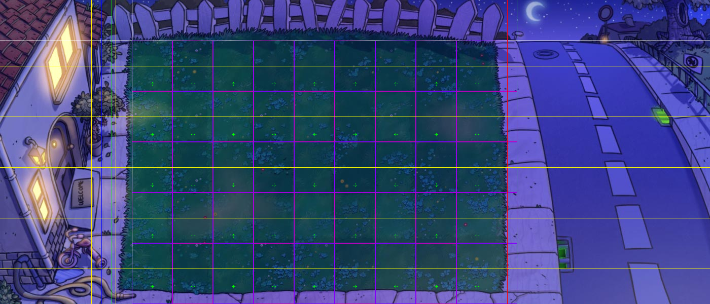
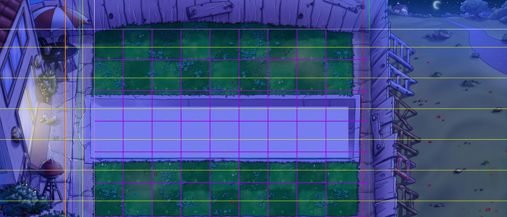
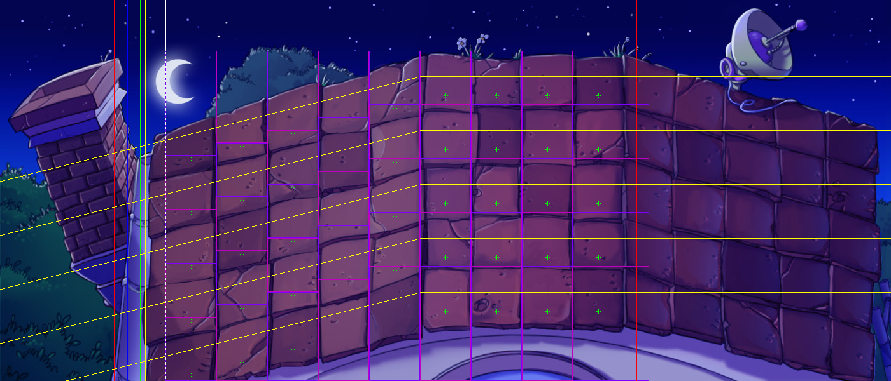

返回首页
PVZ时空数据
现代遗留问题清算——这个世界的时空。
FAQ
Q：这个一定是正确的吗？
A：除了造物主，没有什么东西胆敢说自己对世界的认识是绝对正确的吧，除非 it isn't something. 本文只是简单测量结果的等效表达，其必然带有作者的能力和思维的局限性。
前置说明
-
植物/僵尸坐标：以游戏内存值为准。坐标轴原点为1-1格左上角，↓→为正方向。战场可见区左端为
x=-40，上端为y=-80。 -
判定体系：以游戏内调试模式为准。
空间体系
数据类型整数，单位px
- 场景边界：
- 伤害区 -50 ~ 800
- 触车 -20 ~ 28
- 警戒区 0 ~ 800
- 屋外区 -21 ~ +
| 地形 | 行号 | 僵尸y | 植物y |
|---|---|---|---|
| 前院 | 1 | 50 | 80 |
| 2 | 150 | 180 | |
| 3 | 250 | 280 | |
| 4 | 350 | 380 | |
| 5 | 450 | 480 | |
| 后院 | 1 | 50 | 80 |
| 2 | 135 | 165 | |
| 3 | 220 | 250 | |
| 4 | 305 | 335 | |
| 5 | 390 | 420 | |
| 6 | 475 | 505 | |
| 屋顶 | 1 | 40 | 见下 |
| 2 | 125 | ||
| 3 | 210 | ||
| 4 | 295 | ||
| 5 | 380 |
屋顶植物：
| (x,y) | 1(列) | 2 | 3 | 4 | 5 | 6 | 7 | 8 | 9 |
|---|---|---|---|---|---|---|---|---|---|
| 1(行) | 40,170 | 120,150 | 200,130 | 280,110 | 360,90 | 440,70 | 520,70 | 600,70 | 680,70 |
| 2 | 40,255 | 120,235 | 200,215 | 280,195 | 360,175 | 440,155 | 520,155 | 600,155 | 680,155 |
| 3 | 40,340 | 120,320 | 200,300 | 280,280 | 360,260 | 440,240 | 520,240 | 600,240 | 680,240 |
| 4 | 40,425 | 120,405 | 200,385 | 280,365 | 360,345 | 440,325 | 520,325 | 600,325 | 680,325 |
| 5 | 40,510 | 120,490 | 200,470 | 280,450 | 360,430 | 440,410 | 520,410 | 600,410 | 680,410 |
地形图



地形图注
两种线有重合时，重合段用两者颜色相间的线表示；
白线为坐标轴，x轴向右为正，y轴向下为正；
紫色和暗品红色为各控制格的边框；
绿线为可见区的边界；
右红线为伤害区和警戒区的右界——若僵尸防御域都在其右方则无敌且不被当作目标；
蓝线为警戒区的左界——若僵尸防御域都在其左方则不被当作目标； 黄竖线为碰车区的边界；
左红线为屋外区的左界——若僵尸防御域都在其左方则其进屋；
黄横线或斜线为僵尸基准轨迹，没有纵向偏移且正常前进的僵尸坐标在其上；
绿十字为植物基准点，通常植物坐标在那些位置。
植物模型
说明
统一使用内存坐标系，以植物内存坐标为偏移中心
伸：指“延伸”；例如“左伸X”代表左限向左延伸X
缩：指“收缩”；例如“右缩X”代表右限向左收缩X
- 基准参考：前院1-1豌豆射手
x=40, y=80 - 受行作用x（啃碾砸）：
- 普通植物
+30~+50 - 高坚果
+30~+70 - 南瓜
+20~+80 - 玉米炮（以炮尾所在格为准）
+20~+120- 对于炮头所在格而言为
-60~+40
- 对于炮头所在格而言为
- 普通植物
- 受小丑爆炸：
x左右各伸20, y=0~+80 - 玉米炮：
- “准星”即红叉的中心，单位为整数像素，除以80后得到列数
- 例如
准星x=721的炮，等价于炸9.0125列的炮，等价于AvZ::pao_operator.pao(x, 9.0125)
- 例如
- 爆炸中心”即实际爆炸的圆心
- 非天台场景
爆炸中心x=准星x-7, 爆炸中心y=准星同行植物y+40
- 非天台场景
- “准星”即红叉的中心，单位为整数像素，除以80后得到列数
- 对于r行c列的梯子南瓜，梯子被炮炸飞的条件是
r-1≤准星行数≤r+1，且80*c-113≤准星x≤80*c+126 - 行特种x：（伸缩会叠加）
- 土豆触发
0~+55- 对正在啃的
左右各伸30 - 对跳后撑杆
左缩40*(1+N)，N为比该撑杆编号小的跳后撑杆总数
- 对正在啃的
- 大嘴花
+80~+120- 对正在啃的
左右各伸60 - 对反向矿
左缩20
- 对正在啃的
- 窝瓜触发+20~+135
- 对正在啃的
右伸40 - 对跳后撑杆、海豚、橄榄、小鬼
左伸60 - 对反向矿、雪人
左伸70，正在啃再左伸40 窝瓜x-118≤奔跑撑杆x≤窝瓜x-17时触发窝瓜
- 对正在啃的
- 窝瓜压区跨度
43- 对橄榄
左右各伸20
- 对橄榄
- 缠绕海草
0~+80
- 土豆触发
- 行远程开火x：
- 普通植物向右
+60 - 裂荚左
+16 - 杨桃左
-3 - 反向双发
0
- 普通植物向右
- 行短程：
- 小喷/海蘑菇
+60~+290开火 - 小喷可击中
+40~+323 - 海蘑菇可击中
+45~+328
- 小喷/海蘑菇
- 行AOE攻击x：
- 大喷
+60~+400 - 忧郁菇
-80~+160 - 地刺（王）
+20~+50 - 以上这些是开火区，命中区都左右各缩1
- 大喷
- 行AOE子弹：
- 火豌豆飞溅区跨度
100- 飞溅区左端与命中区左端同（命中区跨度
30）
- 飞溅区左端与命中区左端同（命中区跨度
- 西瓜（冰瓜）飞溅区跨度
60- 与同行命中区重合
- 火豌豆飞溅区跨度
- 圆心：
- 樱桃
(40,40),半径115 - 土豆
(20,40),半径60 - 胆小害怕
(0,20)半径120 - 毁灭菇
(40,40)半径250 - 磁铁
(0,20)半径270（对正在啃食的半径320） - 猫
(40,40) - 玉米炮伤害以爆炸中心为圆心，
半径115（爆炸中心见前）
- 樱桃
- 其他：
- 种植坐标偏移 (x, y)：
- 小喷/海蘑菇
(-5~+4, -3~+2) - 阳光菇
(-5~+4, -5~+4)
- 小喷/海蘑菇
- 种植坐标偏移 (x, y)：
注：圆的判定是(Δx)^2+(Δy)^2<=R^2，因此相应的圆不是一般画图软件出来的圆，判定圆图形如下：

僵尸模型
说明
统一使用内存坐标系，以僵尸内存坐标为偏移中心
-
基准参考：前院1路进家普僵
x=-100, y=50 -
僵尸y相关：
- 特殊y：空中的气球
-30 - 纵向偏移h（也称“高度”，纵向偏移越大，僵尸y越小）：
- 刚召出的伴舞
-150 - 鸭子
-40 - 水中的潜水
+10 - 跳跳
+16（跳跃中再+9~+49） - 雪橇推行
-10乘坐中+18（上车中随时变化） - 空中的气球
+25
- 刚召出的伴舞
- 僵尸的实际y可以理解为：
y-h
- 特殊y：空中的气球
-
防御域x：
- 橄榄
+50~+107 - 潜水
+12~+74 - 冰车/投篮
0~+153 - 雪橇车（以为首者为准，相邻间距
50）-50~+225 - 游泳的海豚
+20~+62 - 矿工
+50~+78 - 蹦极
-20~+90 - 巨人
-17~+108 - 其他
+36~+78
- 橄榄
-
防御域y：
- 鸭子
0~+82 - 水中的潜水
0~+130 - 冰车/投篮
-13~+127 - 骑行的海豚
0~+125 - 行走的跳跳
+17~+132 - 蹦极
+22~+116 - 巨人
-38~+116 - 其他
0~+115
- 鸭子
-
攻击域x：
- 跳后撑杆、雪橇僵尸、矿工、小鬼：
+50~+70啃咬 - 奔跑的撑杆、骑行的海豚：
-29~+41跳跃 - 潜水
-5~+50啃咬 - 游泳的海豚
+30~60啃咬 - 冰车/投篮
+10~+143碾压 - 冰车
+150~制冰 - 未弃车的雪橇
+53~判断冰道 - 跳跃的跳跳
+10~+40飞跃 - 梯子
+10~+60啃咬＆搭梯 - 巨人
-30~+59敲击 - 其他
+20~+70啃咬
- 跳后撑杆、雪橇僵尸、矿工、小鬼：
-
出生点：
- 旗帜
800 - 撑杆
870~879 - 冰车
800~809 - 雪橇
880~1030 - 投篮
825~834 - 巨人
845~854 - 其他
780~859
- 旗帜
-
飞跃行为：
- 撑杆跳到
目标植物x-70处 - 海豚跳到
起跳时自身x-150处 - 跳跳下次到达最低点于
目标植物x-60处，以速度实现，从而受减速影响
- 撑杆跳到
-
其他：
- 刚召出的
左右伴舞x为舞王x±100，上下伴舞x=舞王x - 小丑爆炸为圆，对僵尸
(60,60),半径115，对植物(60,60),半径90 - 矿工
x<10正常出土 - 投篮车
x<=650进入可投篮模式 - 巨人
x<=400不扔小鬼，400<x<=500时小鬼落点是巨人位置的单值不单调函数，x>500时小鬼落点有很大的随机性而边界不单调
- 刚召出的
僵尸模型图示例
（图中为使图线清晰，将原地图调暗）

僵尸模型图注
图中白线是僵尸基准轨迹，蓝十字是主坐标，绿十字是便移后的坐标，两坐标重叠时用淀色表示，可见部分僵尸坐标偏离僵尸基准轨迹的情况，其中Pogo的坐标存在一个运动范围，其上有横标记的为当前姿态的位置；
蓝框为防御域的边框，红线为攻击域x，冰车的红箭头表示制冰区，雪橇的红十字为判断冰道点，盒子的红叉标识其爆炸圆心，由于圆心点与两坐标点重叠，用白色表示。
时间体系
数据类型整数，单位cs（厘秒）
- 植物时间：
- 樱桃、辣椒、夜间冰/核武：放置到生效
100 - 土豆：
- 放置到破土
1500 - 破土到生效
106。
- 放置到破土
- 大嘴花：
-开咬到命中
70- 空开咬间隔
107 - 吃到再次开咬间隔
4340
- 空开咬间隔
- 墓碑吞噬者：吞碑耗时
448~471(均匀随机) - 冰：
- 减速时间
2000 - 冻结水面和云朵时间
300 - 一次冰冻（僵尸未减速）冻结时间
400~600 - 二次冰冻（僵尸已减速）冻结时间
300~400
- 减速时间
- 窝瓜：
- 触发到起跳
126（起跳时若原目标消失，重新索敌） - 触发到命中
182
- 触发到起跳
- 咖啡豆：
- 放下到开始唤醒
100- 若小偷开始擒拿在中间这段时间，则偷走咖啡豆而蘑菇仍将正常醒来
- 放下到完成唤醒
199- 但咖啡豆编号小于蘑菇时，唤醒的同一帧会结算蘑菇（变相缩短1cs），否则下一帧结算。因此，白昼点冰到生效为
298/299
- 但咖啡豆编号小于蘑菇时，唤醒的同一帧会结算蘑菇（变相缩短1cs），否则下一帧结算。因此，白昼点冰到生效为
- 放下到开始唤醒
- 投手植物：见 https://tieba.baidu.com/p/6761145155
- 忧郁菇：
- 开始开火后
73命中第一发 - 此后每
28命中一发，直到4发完成
- 开始开火后
- 玉米炮：
- 释放到分离
205 - 若炸水路，释放到命中固定
378 - 若炸陆路，释放到命中
373~376373起，若本行爆炸范围内无僵尸则延迟，至多延迟3
- 释放到完成装填
3475
- 释放到分离
- 模仿者：
- 放下到完成模仿
320- 但模仿者编号小于变身后植物编号时，变身完毕的同一帧会结算变身后植物（变相缩短1cs），否则下一帧才结算。因此，夜间模仿冰放置到生效为
419/420
- 但模仿者编号小于变身后植物编号时，变身完毕的同一帧会结算变身后植物（变相缩短1cs），否则下一帧才结算。因此，夜间模仿冰放置到生效为
- 放下到完成模仿
- 樱桃、辣椒、夜间冰/核武：放置到生效
- 僵尸时间：（受减速的减速后翻倍）
- 舞王：
- 出生滑步时间
300~311，滑步期间速度不受减速 - 滑步完毕（或触碰）到召唤
42（受减速） - 伴舞升起用时
150 - 开始召唤到收手
200 - 触碰判定跟啃食判定结算周期相同
- 出生滑步时间
- 小丑：开盒到爆炸
110 - 跳跳：一个跳跃周期
80 - 矿工：
- 开始出土到晕
130 - 晕时间
350（受减速）
- 开始出土到晕
- 小偷：
- 刷新到小偷可被炮炸
394（受冰、可被灰烬炸为395） - 等待
300 - 开始偷取到不可被攻击
63（受减速）
- 刷新到小偷可被炮炸
- 投石车：
- 攻击间隔
300 - 转把手时间
73（受减速）
- 攻击间隔
- 巨人（全受减速）：
- 开敲到命中
134（在命中瞬间所在的1cs内冻结或黄油可消解此次敲击） - 敲收手用时
73 - 开始扔小鬼到小鬼出生
105 - 扔收手用时
37
- 开敲到命中
- 连续伤害：
- 僵尸啃植物
每4cs结算一次，每次伤害4HP - 减速后为
每8cs结算一次，每次伤害4HP- 以上时间基于僵尸存在时间，例如原速僵尸出生后第4、8、12……cs结算啃食
- 雪橇判断无冰道自发损害
6HP/次*1次/1cs，会发生伤害转移 - 僵尸本体剩余HP低于临界自发损害，非匀速，均速还因品种而异
- 僵尸啃植物
- 舞王：
速度体系
见RND Readme、速度解析贴（https://tieba.baidu.com/p/7290751385 ）
- 小丑速度：小丑、橄榄、奔跑的撑杆、挖掘的矿工、奔跑的潜水的相对速度，参考值
0.66-0.68 - 梯子速度：有梯的梯子、倭瓜僵尸的相对速度，参考值
0.79-0.81 - 海豚速度：海豚、愤怒的报纸的相对速度，参考值
0.89-0.91 - 普僵速度：大部分僵尸的相对速度，参考值
0.23-0.37
附：植物受啃、强化地刺扎车和受敲，导致剩余HP<=0时即消失；受子弹、篮球，则要导致剩余HP<0才消失。